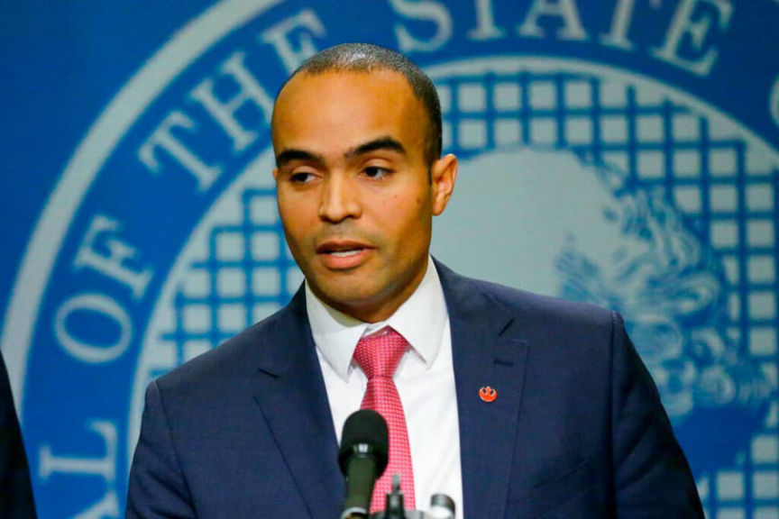
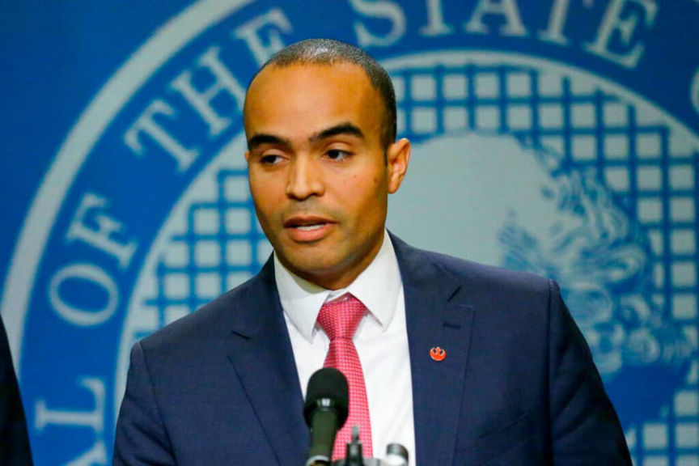

Washington Man Sentenced for Selling Drugs on the Darkweb
~3 min read | Published on 2022-09-26, tagged Darkweb-Vendor, Drugs, General-News, Sentenced using 561 words.
A 29-year-old was sentenced to seven years in prison for selling fentanyl, heroin, methamphetamine, and other drugs on darkweb markets.
Nicholas Partlow, 29, of Issaquah, Washington, was sentenced to seven years in prison for selling drugs on the darkweb, in person, and possessing firearms in furtherance of those crimes.
On March 7, 2022, Partlow pleaded guilty to conspiring to distribute controlled substances and possessing firearms in furtherance of a drug trafficking crime. Partlow agreed to forfeit assets found in his possession, including approximately 11.2192 Monero and 0.0064688 Bitcoin.
“Darknet drug dealers such as Mr. Partlow are spreading addiction and risk of overdose death across our country—all with the touch of a button,” said U.S. Attorney Nick Brown. “These defendants who deal in cyberspace don’t see the death their drugs leave behind. We must do all we can to interdict these deadly substances to reverse the record numbers of overdose deaths.”

During his career, Partlow had completed 400 transactions on darkweb markets. He sold at least 52 grams of heroin, 13 grams of methamphetamine, 142 pills containing fentanyl, 866 suboxone strips, and 1,513 pills containing other controlled substances.
In 2020, postal inspectors ordered drugs from Partlow’s vendor account on an undisclosed marketplace. Court documents do not reveal the vendor account Partlow operated. The drugs ordered by undercover feds included 1 gram of heroin, 4.07 grams of methamphetamine, and 79 pills containing other controlled substances. Feds also intercepted packages Partlow had shipped to his customers. The intercepted packages contained 3.25 grams of heroin, two pills containing fentanyl, 18 suboxone strips, and 1,680 pills containing other controlled substances.
Law enforcement obtained a search warrant for Partlow’s residence in November 2020. During the search, officers found heroin, methamphetamine, fentanyl, ketamine, GHB, and other drugs; electronic equipment that Partlow used as part of his trafficking operation; and drug proceeds in cash and cryptocurrency. They also seized five firearms, including a sawed-off shotgun and a pistol with a suppressor (presumably in violation of the NFA).
After the search, Partlow continued to sell drugs. In March 2021, police arrested Partlow and an accomplice. Partlow had drugs and a notebook “containing information about his trafficking activities” on his person at the time of his arrest. After processing Partlow, police released him. In September 2021, Partlow crashed a car in Renton, Washington. Police found drugs, a taser, and a silver, key-shaped LaCie brand computer thumb drive in his car. Partlow has been in federal custody since the car crash when he was wanted on a federal warrant.
“Partlow was no mere street-level dealer and should be not sentenced like one,” Assistant United States Attorney Jonas Lerman wrote in the government’s sentencing memorandum. “In hundreds of darknet transactions, he trafficked deadly drugs. By his own account, he started dealing on the darknet because it was ‘more lucrative’ than local dealing.”
“Fentanyl and heroin continue to be a menace on our streets, but Partlow will not,” said Inspector in Charge Anthony Galetti. “He believed he could take advantage of those sickened by addiction for his own profit, however today he learns the true price of the dangerous and deadly narcotics he pedaled into our communities. I commend the work on the investigators on this case who worked tirelessly to bring Partlow to justice.”
Issaquah, Washington man sentenced to 7 years in prison for dealing fentanyl and other drugs on the darknet | www.justice.gov, archive.is, archive.org
Plea Agreement
Nicholas Partlow, 29, of Issaquah, Washington, was sentenced to seven years in prison for selling drugs on the darkweb, in person, and possessing firearms in furtherance of those crimes.
On March 7, 2022, Partlow pleaded guilty to conspiring to distribute controlled substances and possessing firearms in furtherance of a drug trafficking crime. Partlow agreed to forfeit assets found in his possession, including approximately 11.2192 Monero and 0.0064688 Bitcoin.
“Darknet drug dealers such as Mr. Partlow are spreading addiction and risk of overdose death across our country—all with the touch of a button,” said U.S. Attorney Nick Brown. “These defendants who deal in cyberspace don’t see the death their drugs leave behind. We must do all we can to interdict these deadly substances to reverse the record numbers of overdose deaths.”

U.S. Attorney Nick Brown announced the sentence
During his career, Partlow had completed 400 transactions on darkweb markets. He sold at least 52 grams of heroin, 13 grams of methamphetamine, 142 pills containing fentanyl, 866 suboxone strips, and 1,513 pills containing other controlled substances.
In 2020, postal inspectors ordered drugs from Partlow’s vendor account on an undisclosed marketplace. Court documents do not reveal the vendor account Partlow operated. The drugs ordered by undercover feds included 1 gram of heroin, 4.07 grams of methamphetamine, and 79 pills containing other controlled substances. Feds also intercepted packages Partlow had shipped to his customers. The intercepted packages contained 3.25 grams of heroin, two pills containing fentanyl, 18 suboxone strips, and 1,680 pills containing other controlled substances.
Law enforcement obtained a search warrant for Partlow’s residence in November 2020. During the search, officers found heroin, methamphetamine, fentanyl, ketamine, GHB, and other drugs; electronic equipment that Partlow used as part of his trafficking operation; and drug proceeds in cash and cryptocurrency. They also seized five firearms, including a sawed-off shotgun and a pistol with a suppressor (presumably in violation of the NFA).
After the search, Partlow continued to sell drugs. In March 2021, police arrested Partlow and an accomplice. Partlow had drugs and a notebook “containing information about his trafficking activities” on his person at the time of his arrest. After processing Partlow, police released him. In September 2021, Partlow crashed a car in Renton, Washington. Police found drugs, a taser, and a silver, key-shaped LaCie brand computer thumb drive in his car. Partlow has been in federal custody since the car crash when he was wanted on a federal warrant.
“Partlow was no mere street-level dealer and should be not sentenced like one,” Assistant United States Attorney Jonas Lerman wrote in the government’s sentencing memorandum. “In hundreds of darknet transactions, he trafficked deadly drugs. By his own account, he started dealing on the darknet because it was ‘more lucrative’ than local dealing.”
“Fentanyl and heroin continue to be a menace on our streets, but Partlow will not,” said Inspector in Charge Anthony Galetti. “He believed he could take advantage of those sickened by addiction for his own profit, however today he learns the true price of the dangerous and deadly narcotics he pedaled into our communities. I commend the work on the investigators on this case who worked tirelessly to bring Partlow to justice.”
Issaquah, Washington man sentenced to 7 years in prison for dealing fentanyl and other drugs on the darknet | www.justice.gov, archive.is, archive.org
Plea Agreement